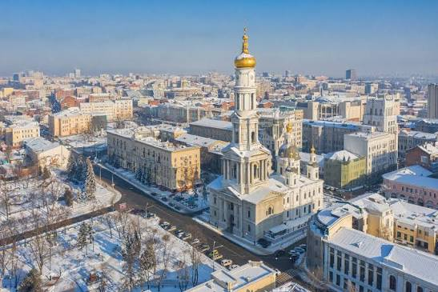
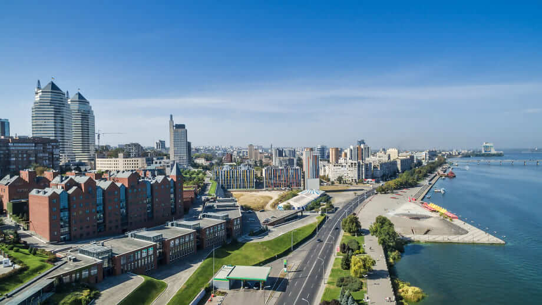

Kyiv

Kyiv, the capital of Ukraine, is located in the north-central part of the country. It is
the largest city in Ukraine and serves as the political, economic, and cultural center of
the nation. Kyiv has a rich history that dates back over 1,400 years and is known for its
stunning architecture, including the iconic Saint Sophia Cathedral and the Kyiv Pechersk
Lavra. The city is also a hub for education and research, with numerous universities and
institutions. Kyiv's vibrant nightlife, diverse culinary scene, and numerous parks and
green spaces make it a popular destination for both locals and tourists.
Kharkiv

Kharkiv is a city in northeastern Ukraine and is the second-largest city in the country.
It is an important industrial, cultural, and educational center. Kharkiv is known for its
impressive architecture, including the Derzhprom building, which is a prime example of
constructivist architecture. The city has a rich cultural scene, with numerous theaters,
museums, and galleries. Kharkiv is also home to several universities and research
institutions, making it a hub for education and innovation. The city's vibrant atmosphere,
combined with its historical significance, makes it a fascinating destination for visitors.
Lviv

Lviv is a city in western Ukraine, on the edge of the Carpathian Mountains. It is the
largest city in western Ukraine and the seventh-largest city in the country. Lviv is known
for its rich history, cultural heritage, and vibrant arts scene. The city has a
well-preserved historical center, which is a UNESCO World Heritage Site, and is home to
numerous museums, theaters, and galleries. Lviv is also famous for its coffee culture,
with many cafes and coffeehouses scattered throughout the city.
Odesa

Odesa is a port city on the Black Sea in southern Ukraine. It is the third-largest city in
the country and serves as an important cultural and economic center. Odesa is known for
its beautiful beaches, historic architecture, and vibrant nightlife. The city has a rich
history, with influences from various cultures, including Russian, Turkish, and Jewish.
Odesa is also famous for its annual film festival and its unique humor, which is reflected
in the city's many theaters and comedy clubs.
Dnipro

Dnipro is a city in central Ukraine and the fourth-largest city in the country. It is an important industrial and cultural center. Dnipro is known for its beautiful riverside location, historic architecture, and vibrant cultural scene. The city has a rich history, with influences from various cultures, including Russian, Ukrainian, and Jewish. Dnipro is also famous for its annual music festival and its unique cuisine, which reflects the city's diverse cultural heritage.